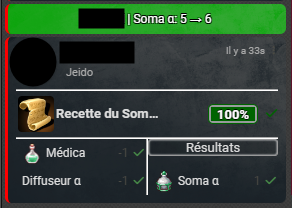

Artisanat
Le système d’artisanat a été refondu avec un nouveau module plus souple, permettant des fonctionnalités étendues (crafts en plusieurs étapes, échecs cumulés, etc.). Il est désormais accessible depuis un onglet dédié dans la fiche de personnage.
-
 Accéder au système de craft :
Accéder au système de craft :
Ouvrez la fiche de personnage et cliquez sur l’onglet “Artisanat” en bas à droite. -
Démarrer un craft :
Cliquez sur “+ Ajouter” en haut à droite, sélectionnez une recette et cliquez sur “Démarrer”. Le craft sera visible sur la fiche. -
Progresser :
Cliquez sur le bouton pour avancer dans la fabrication. La jauge verte indique une réussite, la rouge un échec. Elles progressent à chaque tentative. -
Finalisation :
Lorsque la jauge verte atteint 100%, l’objet est automatiquement ajouté à l’inventaire du personnage.
